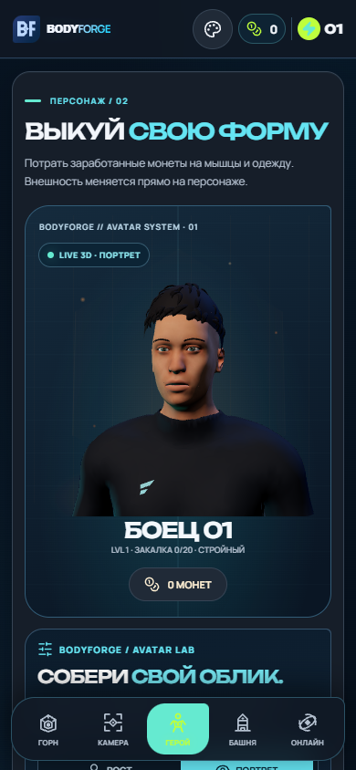
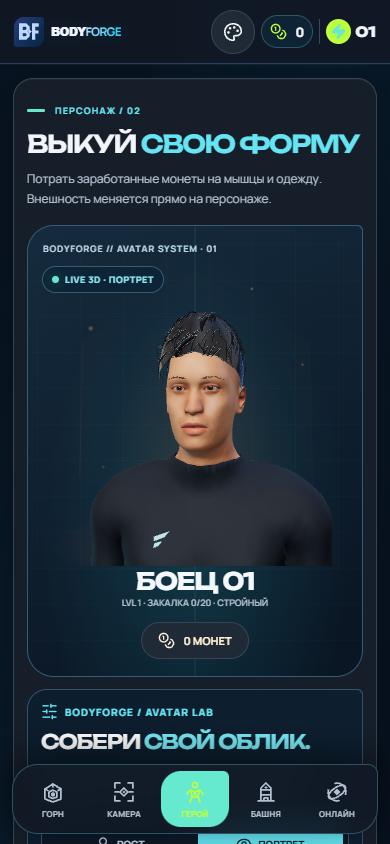

BODYFORGE / 3D · 27.10.2026
Более естественный персонаж
Сравнение реальных кадров приложения: уточнённая форма лица, глаза и губы с текстурами, отдельные волоски бровей, новая причёска и студийный PBR-свет.


ПОСЛЕДО
Снимки 390 × 844, синтетический профиль. Они показывают совместный эффект геометрии, материалов и освещения. Художественный фотореализм и производительность физического телефона пока требуют дальнейшей работы и измерений.
Открыть проверенную версию приложения